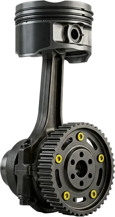
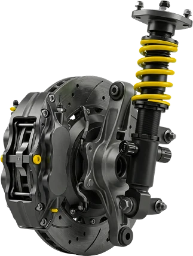
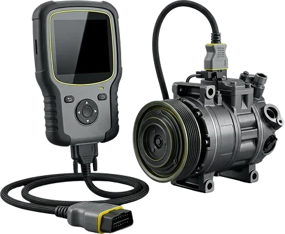
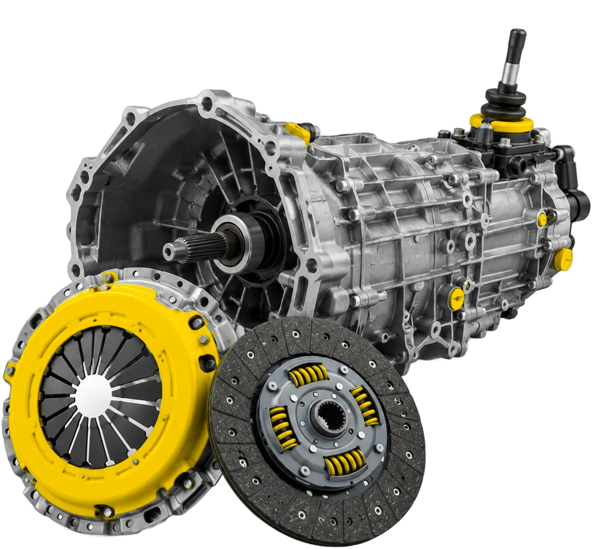
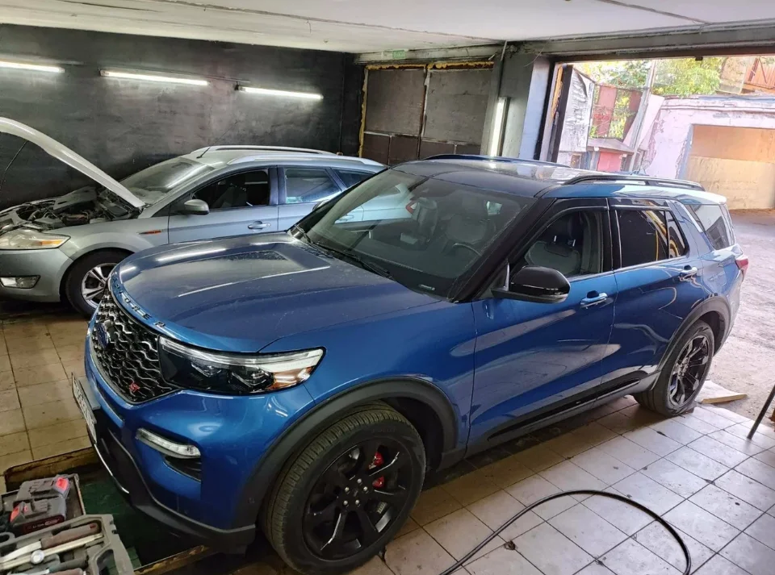
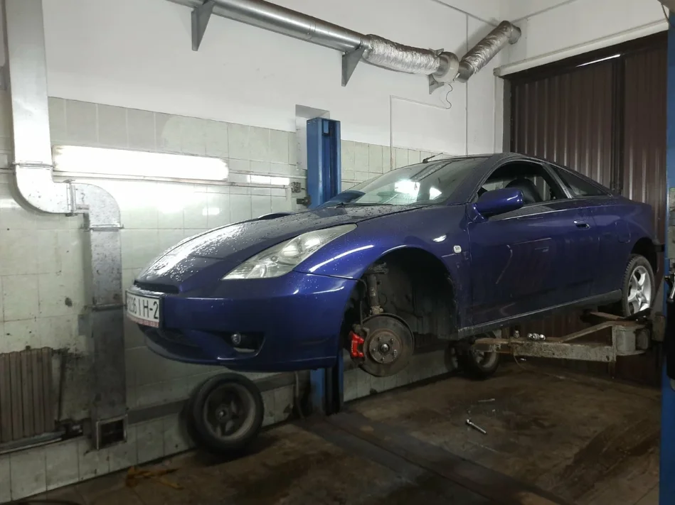
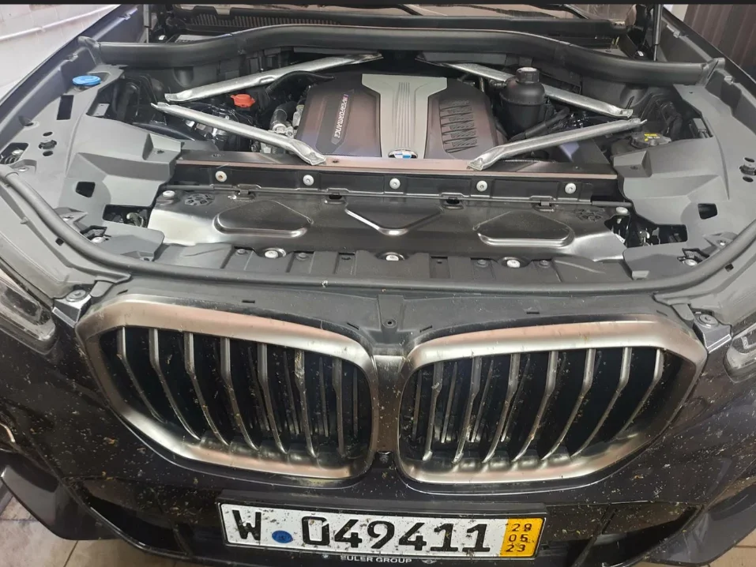
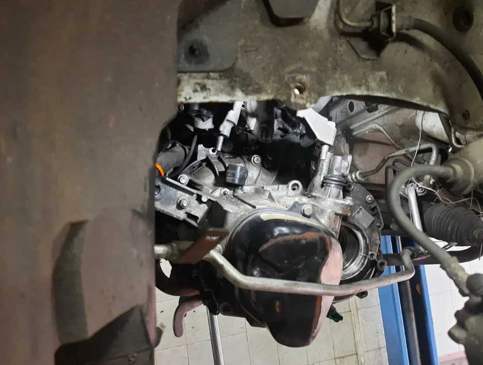
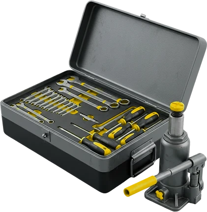

Двигатель и обслуживание
Ремонт двигателяЗамена ГРМЗамена маслаПолное сервисное обслуживаниеТопливная системаВыхлопная система
Узнать цену
Двигатель, ходовая, тормоза, сцепление и электрика. Иномарки и отечественные авто.
И тормозной системы — тоже 30 Br
От ВАЗ и Niva до BMW, Audi и Volvo
Суббота и воскресенье — выходной




Цены в белорусских рублях.
Остальное — по телефону
Записаться



Машину приняли, сделали диагностику и позвонили согласовать, что делать. Цену ремонта и запчастей назвали сразу. Обращался уже не раз — всё быстро и качественно.
Приняли авто сразу, помогли подобрать и заказать запчасти, каждый этап ремонта согласовали. Сделали быстро, сотрудники вежливые.
Провели диагностику, согласовали цены — сумма ремонта не поменялась. Сделали быстро и качественно, отдельное спасибо директору Евгению.
Оставляю машину утром, еду на работу — к концу дня авто готово. Персонал вежливый, ремонт качественный.
Обслуживал здесь три свои машины — всё понравилось. Услуг много, всё вовремя, цены не из космоса.
Листайте вбок →
Расскажите, что с машиной
Пн–Пт с 9:00 до 19:00
ул. Старовиленская, 123А
